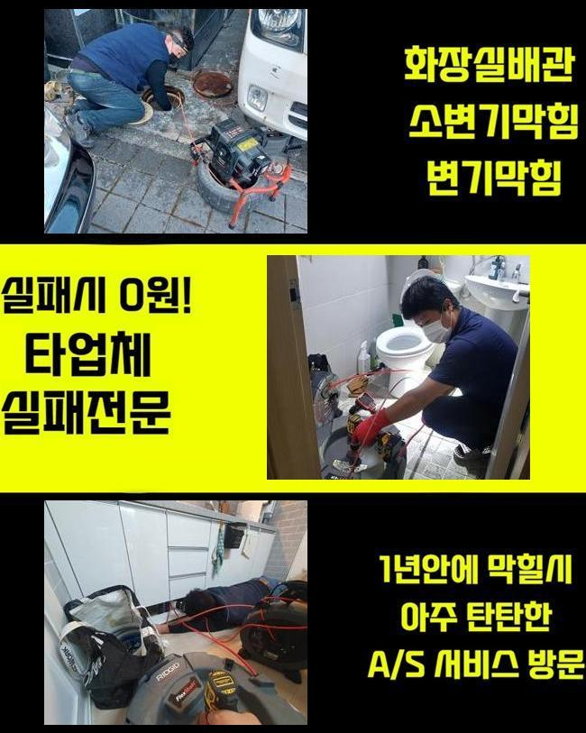
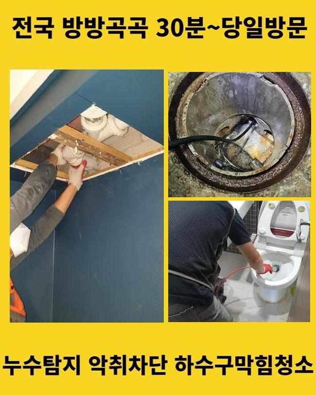
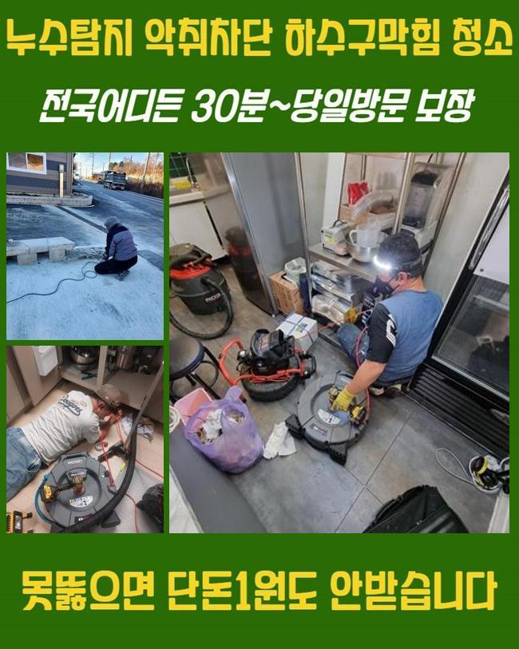
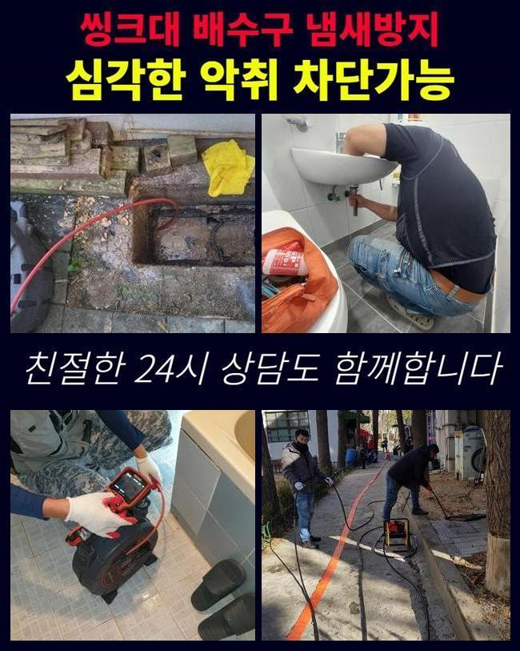
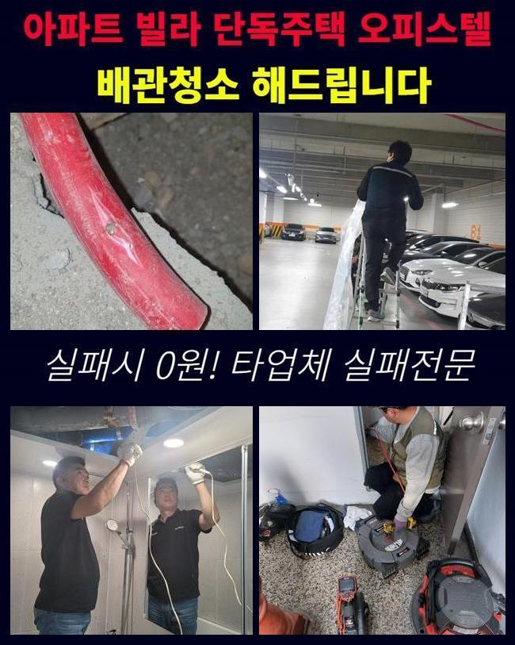
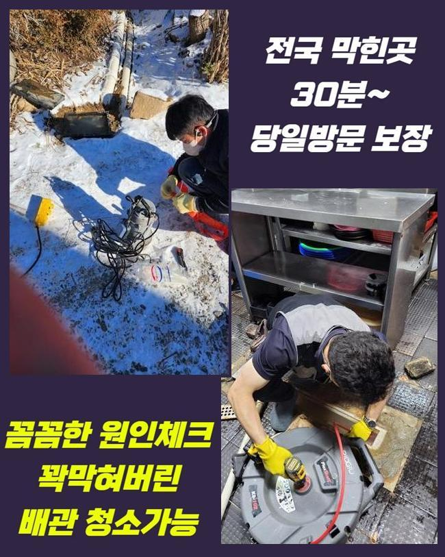
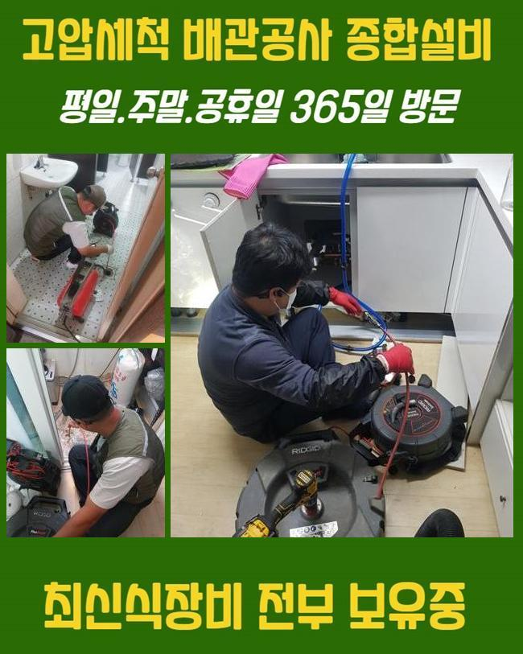

🏠 양주 삼숭동씽크대배수관막힘 백석읍 배수로뚫기 설비
양주 싱크대막힘 전문 시공 후기

📋 작업 개요
- 위치: 양주
- 서비스 유형: 싱크대막힘, 하수구막힘, 배관막힘, 뚫는업체, 설비공사
- 작업 일시: 2025. 5. 30. 17:51
- 업체명: 하수구수사대 (010-5615-2118)
🔍 문제 상황
양주 삼숭동씽크대배수관막힘 백석읍 배수로뚫기 설비
이번에 수리를 진행한 장소는 싱크대배관 막힘현상이 일어난 세대였어요
5년 이상 별다른 이상이 나타나지 않았었는데 갑작스레 막힘현상이 발발하였다고 말씀하셨어요
유튜브로 통수방도를 살펴보고 작업을 해보았는데 막힘해소가 적합하게 안됐다고 말씀하셨죠
그러다가 상황이 깊어질것을 걱정하여 전문가를 찾다가 저희의 업무내용이 눈에 들어와서 연락을 취하셨다고 하셨죠
개수대배관으로 물이 안내려갈때 일반적으로 나무젓가락으로 휘저어보거나 식초나 베이킹파우더 등을 통해 해결하려고 하시죠
사태가 심각하지 않다면 그러한 방안을 토대로 정비가 될수 있지만 정체 상황이 많은 경우에 감행한다면 정체가 강화될수가 있답니다
의뢰인분은 처음 액상용품을 넣었을땐 한동안 뚫린걸로 간주하셨다고 해요
다만 3일이 지나자 물이 또다시 안내려갔고 희석제를 투입하여도 변화가 없었다고 하셨어요
고객께선 전화로 막힘정도가 어떠한지 확실하게 안내하셨죠
이로 인하여 저희측은 개별 도구들을 신속하게 챙겨 출발할수 있었답니다
이번 의뢰인처럼 사태를 사실적으로 이야기해 주시면 더더욱 빨리 준비가 될수 있단걸 안내드립니다
저희팀이 늦게 방문한다면 일상중의 문제점이 더더욱 증대될것이기 때문에 조속히 이동하였죠

🔎 원인 분석
💡 전문가 진단: 정밀 진단 장비를 사용하여 슬러지의 고착 여부를 판명하고 타격/세척 작업을 실시했습니다.
또 개수대에서 터진 사태가 근방으로 전이되는걸 방예하는 부분도 저희의 업무중 하나라고 볼수 있죠
주방으로 이동하여 정황을 보았더니 개수대에 생활하수가 들어차 있었어요
전혀 빠져나갈 모습이 아니어서 내시경기기로 내부상황을 확인하기로 합니다
겉에서는 별 이상이 안느껴져도 하단부까지 들어가게 되면 사유가 밝혀질때가 많답니다
의뢰인분과 카메라로 정황을 분석하였는데 고착화된 찌꺼기가 굉장히 많았답니다
해당되는 사안을 기초로 어떠한 방책으로 정체를 처리할지 판단할수 있었습니다
노폐물이 입구에서부터 적체된 모습이었고 하부로 돌입하면 더욱 수량이 증가하여 만만히 볼일이 아니라고 판단되었습니다
저희 전문업체는 파이프 전체 구역을 조사하였고 상층부의 이물질들을 선제적으로 처리하기로 했어요
공정은 흡입기로 단행했죠
고압으로 작동되는 도구이며 작은 퇴적물은 수월하게 정리가 가능하죠
이후 관련부품들을 분리한뒤 바닥쪽의 배수관으로 배관내시경을 진입시켜 정밀관찰을 시작했어요
하단부의 이물누적이 심했는데 식초나 베이킹소다 등을 투입해보더라도 특별한 개선점을 기대하기는 힘들어요
주방배관 문제의 메인 이슈를 없애나가지 못했기 때문에 계속적으로 막힘증세가 생기는 거랍니다

🔧 작업 과정
그렇기에 숙련된 담당자에게 문제를 해결받고 관리해 나가는게 합당합니다
개수대에서 조리도 하고 접시들도 세정하니 크고작은 찌꺼기들이 유입됩니다
기름슬러지와 같은 것들은 기온이 떨어지며 고착화되어 문제가 더더욱 나빠지게 되어있죠
석션기기로 위쪽의 오물들을 치우고 사태를 똑바로 살피기로 했는데요
문제가 심하지 않다면 석션 공정만으로도 이물을 제거하기도 한답니다
배수관의 상부쪽에만 찌꺼기가 쌓인 경우라면 흡입기기를 가동하여 신속하게 해결하기도 한답니다
반면 이곳은 배수관 전체에 이물질이 적층을 이루고 있었기 때문에 또다른 작업이 추가될 필요가 있었어요
흡입장비로 표면에 상존하던 이물들을 절반이상 정리하니 배관내시경의 시야가 돌아오게 되었죠
배수관 내측으로 진입해보니 석션기기로 제거할 수 없는 퇴적물들이 상존하고 있었답니다
석회성분과 음식물찌꺼기가 섞이며 바위처럼 굳어졌기에 그를 처치하려면 파쇄장비의 이용이 필요했어요
샤프트기기는 배수관에 침착된 잔존물을 소멸시켜 주기에 이런 곳에 적용하기 알맞습니다
그런데 해당장비를 과도하게 이용한다면 관로를 파손할 가능성도 존재한다는걸 인지해야 해요
기술 수준이 뛰어나더라도 배관내시경을 사용하지 않고 업무를 수행한다면 잘못된 모습이 표출되기도 해요
그러므로 저흰 어느 순간이든 내시경카메라를 사용한다는걸 말씀드려요
벽면에 쌓인 이물질들을 소제하는데 그 양이 상당했어요
시공중 고객님에게 거름망을 사용하시라고 권장해 드렸으며 관리방법도 일러드렸답니다
저희들이 공사한 이후에 장기간 그 상태를 지속시키기 위해선 사용자의 꾸준한 보존은 필요했답니다
가벼운 배수망 하나만으로 정체를 유발하는 성분이 흘러들어가는 것을 방예할수 있어요
추가적으로 냄비에 뭍어있는 기름기의 경우 흡습성이 높은 재질을 이용하여 닦아주는 것이 마땅하다는 점도 설명합니다
샤프트기기의 가동능력을 바탕으로 단단해진 이물질들을 조속히 분쇄하며 석션기를 통해서 제거해 주었답니다
수리과정에서 발생된 잔존물도 밖으로 배출시켜야 재발상황이 일어나지 않아요


✅ 작업 완료
노화된 밸브는 신품으로 교체하고 세밀하게 마무리 작업을 했는데요
배수테스트를 즉각적으로 진행했고 문제없이 하수가 빠져나가는걸 파악할수 있었죠
내시경장비로 조사해나가면서 작업을 철두철미하게 수행했기에 배관 전반이 깔끔해졌죠
고객께도 수시로 배관내부를 확인할수 있도록 조치했고 물빠짐도 검증하도록 해드렸답니다
저희팀은 어느곳이든 정확하게 수리하고 상황을 완벽하게 처리하고 있어요
느닷없는 하수구 정체로 어려움에 처해있다면 지금 바로 의뢰하시길 바라요




⚠️ 주방 싱크대 배관 막힘 예방 수칙
- ✅ 기름기가 묻은 식기나 프라이팬은 설거지 전 키친타올로 반드시 기름때를 닦아내세요.
- ✅ 주기적으로 싱크대 개수대에 뜨거운 물을 가득 받아 한 번에 내려 배관 내부 기름을 씻어내세요.
- ✅ 배수구 거름망을 미세한 필터로 사용하시고 음식물 찌꺼기가 틈으로 새어 들지 않게 관리하세요.
- ✅ 베이킹소다와 식초를 뜨거운 물과 함께 일주일에 한 번씩 부어주면 배관 살균과 막힘 예방에 좋습니다.
💡 핵심 정리
- 확실한 장비 작업(내시경 점검 및 샤프트 스케일링)으로 원인을 뿌리 뽑습니다.
- 작업 후 1년 이내에 동일한 부위 재발 시 100% 무상 A/S 서비스를 보장합니다.
- 서울 · 경기 · 인천 전 지역에 24시간 언제든 긴급 출동할 수 있도록 항시 대기 중입니다.
❓ 자주 묻는 질문 (FAQ)
🚨 양주 싱크대막힘 문제로 고민이신가요?
정확한 원인 진단과 확실한 시공으로 재발 없는 해결을 약속드립니다.
24시간 긴급 출동 | 서울 · 경기 · 인천 전지역 | 1년 내 재발 시 무상 A/S